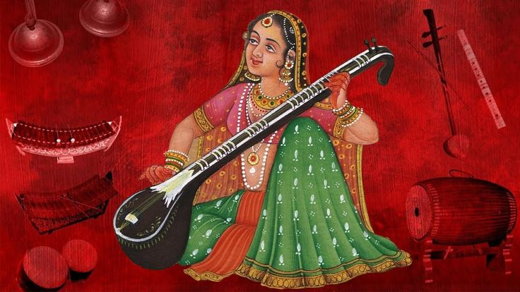
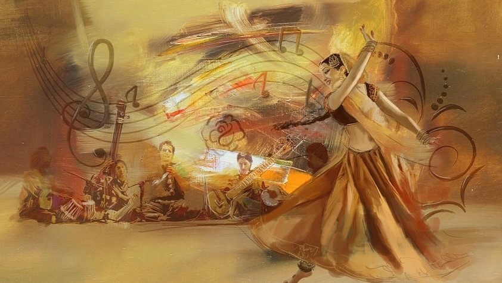
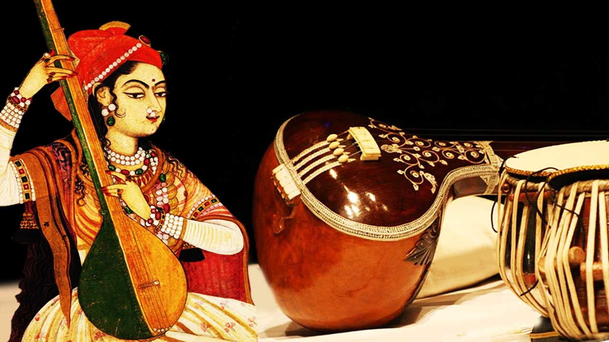

RAAG SHANKARA
Raag Shankara is a raga in Hindustani classical music. It is a pre-midnight raga, typically performed between 12:00 AM and 3:00 AM.Raag Shankara is known for its bold and sharp pronunciation of notes, which can evoke a sense of energy and vitality.

RAAG GAUD SARANG
Raag Gaud Sarang is a Hindustani classical raga that is often classified as an afternoon raga, typically performed during the early afternoon hours (12-3 pm). It is a complex and intricate raga that combines elements of Sarang and Gaud ragas.

RAAG KAMOD
Raag Kamod is a very melodious raga, and it is often used in light classical genres. It is close to ragas like Desh, and a skilled rendition is required to make the differences distinct to the listener.
RAAG POORVI
Raag Poorvi is a Hindustani classical music raga that belongs to the Poorvi thaat. It is a serious, quiet, and mystical raga that is not commonly performed nowadays.It is a complex and serious raga that requires skill and practice to render effectively.

RAAG JAIJAIVANTI
Raag Jaijaivanti is a Hindustani classical raga belonging to the Khamaj Thaat. According to the Guru Granth Sahib, this raga is a mixture of two other ragas - Bilaval and Sorath. It is a very sweet and touching raga that has a wide public appeal.

RAAG CHAYANAT
Raag Chayanat is a popular raga in Hindustani classical music, characterized by its sweet and emotionally swaying mood. It is a combination of Chhaya and Nat, two old ragas that are rarely performed.